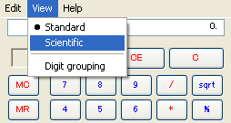

<script src="https://cdn.jsdelivr.net/gh/story-doc/js@master/storydoc.js"></script>
<link rel="stylesheet" href="../custom.css"></link>

<screen style="background-color: rgb(236, 233, 216);">
  
</screen>

<action id="US01"
        name="Select Scientific"
        link="../US01/blank.html">
User selects "Scientific" mode.<br>
System displays calculator in Scientific mode.<br>
ユーザは、”関数”モードを選択する。<br>
システムは、関数モードで電卓を表示する。
<test>the screen is changed to Scientific mode.</test>
</action>

<test>scientific option is visible.</test>
